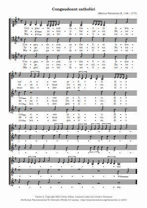

Medieval song for three voices
Congaudeant Catholici is the only surviving work by Albertus Parisiensis.

The piece was part of the Codex Calixtinus, a work intended as a guide for travelers making the Way of St. James, a pilgrimage to a shrine in Santiago de Compostela.